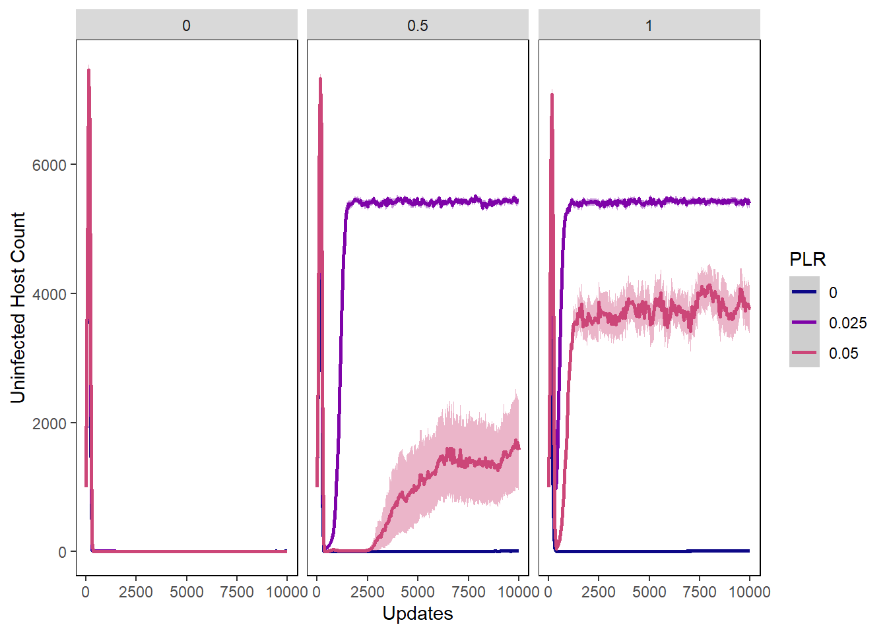
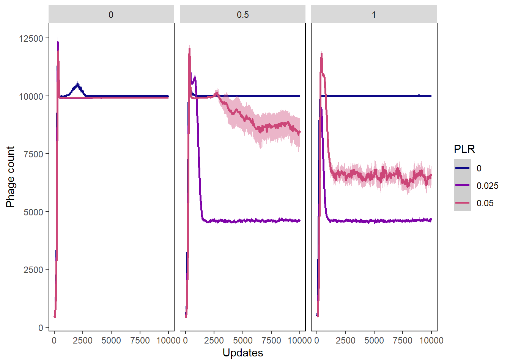
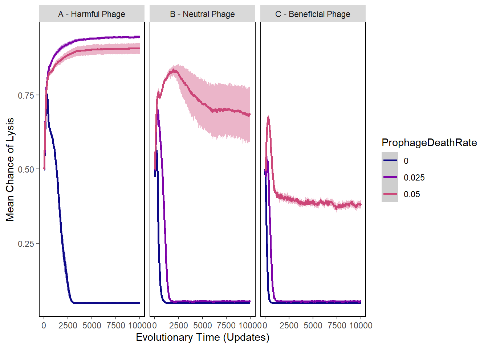
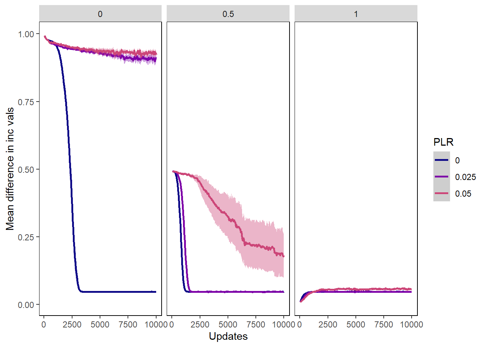
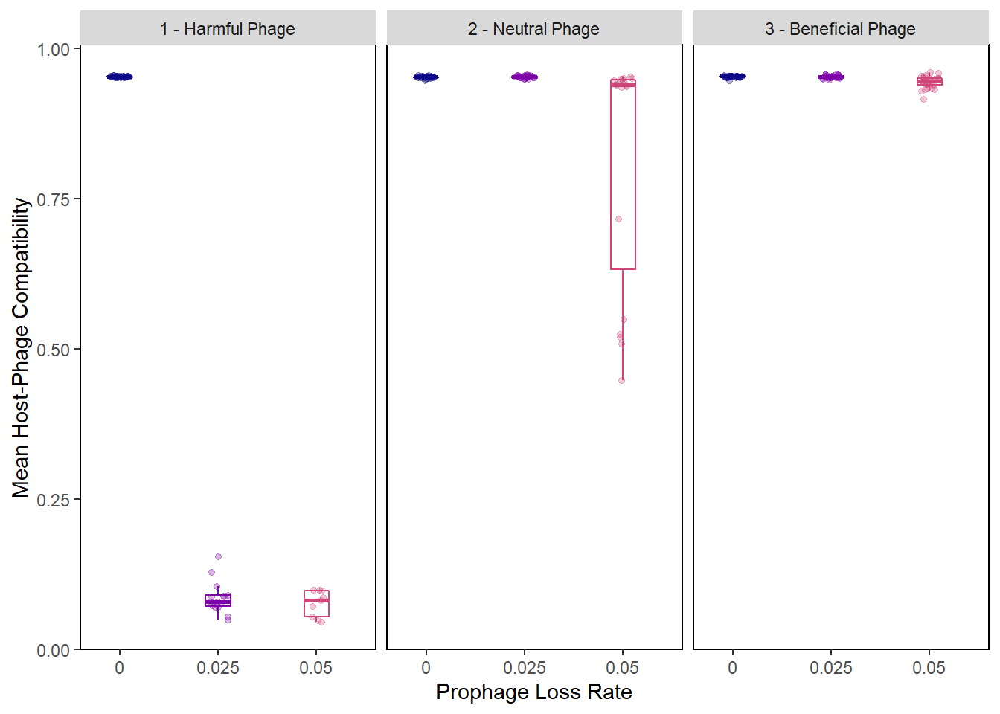

Chapter 6 Benefit Only - Induction off
The following includes the R scripts that we used to generate our graphs for the data where the potential benefit to the hosts of lysogenic phage was turned on, but induction was turned off.
6.1 Gather Settings and Treatments
General settings
pro_folder <- "Data/BenefitOnly/" #Folder where datafiles are
pro_treatments <- c("PLR", "PIV") #Names of the treatments being tested - should match what is in filenamesStacked histogram settings
lysis_separate_by <- "PIV" #Facet wrap lysis chance stacked histogram by Prophage Loss Rate
#How lysis chance stacked histogram bins should be collapsed and renamed
lysis_histogram_bins <- c(Hist_0.0 = "0 to 0.2 (Highly lysogenic)",
Hist_0.1 = "0 to 0.2 (Highly lysogenic)",
Hist_0.2 = "0.2 to 0.4 (Moderately lysogenic)",
Hist_0.3 = "0.2 to 0.4 (Moderately lysogenic)",
Hist_0.4 = "0.4 to 0.6 (Temperate)",
Hist_0.5 = "0.4 to 0.6 (Temperate)",
Hist_0.6 = "0.6 to 0.8 (Moderately lytic)",
Hist_0.7 = "0.6 to 0.8 (Moderately lytic)",
Hist_0.8 = "0.8 to 1.0 (Highly lytic)",
Hist_0.9 = "0.8 to 1.0 (Highly lytic)")
incorp_diff_separate_by <- "PIV"
incorp_diff_histogram_bins <- c(Hist_0.0 = "0 to 0.2 (Highly beneficial)",
Hist_0.1 = "0 to 0.2 (Highly beneficial)",
Hist_0.2 = "0.2 to 0.4 (Moderately beneficial)",
Hist_0.3 = "0.2 to 0.4 (Moderately beneficial)",
Hist_0.4 = "0.4 to 0.6 (Neutral)",
Hist_0.5 = "0.4 to 0.6 (Neutral)",
Hist_0.6 = "0.6 to 0.8 (Moderately detrimental)",
Hist_0.7 = "0.6 to 0.8 (Moderately detrimental)",
Hist_0.8 = "0.8 to 1.0 (Highly detrimental)",
Hist_0.9 = "0.8 to 1.0 (Highly detrimental)")6.2 Collect and Munge Data
Gather filenames
pro_all_filenames <- list.files(pro_folder)
pro_freeliving_filenames <- str_subset(pro_all_filenames, "FreeLivingSyms")
pro_hostval_filenames <- str_subset(pro_all_filenames, "HostVals")
pro_incvaldiffs_filenames <- str_subset(pro_all_filenames, "IncValDifferences")
pro_lysischance_filenames <- str_subset(pro_all_filenames, "LysisChance")
pro_phagevals_filenames <- str_subset(pro_all_filenames, "SymVals")Combine time series data for all subsets of datafiles
pro_freeliving <- combine_time_data(pro_freeliving_filenames, pro_folder, pro_treatments)
pro_hostvals <- combine_time_data(pro_hostval_filenames, pro_folder, pro_treatments)
pro_incvalsdiffs <- combine_time_data(pro_incvaldiffs_filenames, pro_folder, pro_treatments)
pro_lysischances <- combine_time_data(pro_lysischance_filenames, pro_folder, pro_treatments)
pro_phagevals <- combine_time_data(pro_phagevals_filenames, pro_folder, pro_treatments)Rearrange time series data into stacked histogram data
pro_lysis_histdata <- combine_histogram_data(pro_lysischances,
lysis_separate_by,
lysis_histogram_bins)
pro_incorp_diff_histdata <- combine_histogram_data(pro_incvalsdiffs,
incorp_diff_separate_by,
incorp_diff_histogram_bins)Extract information about average genome values at the end of the runs
pro_final_freeliving <- last_update(pro_freeliving)
pro_final_hostvals <- last_update(pro_hostvals)
pro_final_incvalsdiffs <- last_update(pro_incvalsdiffs)
pro_final_lysischances <- last_update(pro_lysischances)
pro_final_phagevals <- last_update(pro_phagevals)6.3 Analyze Data
6.3.1 Summary Statistics
pro_lysis_summary_stats <- pro_final_lysischances %>%
group_by(PLR, PIV) %>%
summarise(final_chance_of_lysis = mean(mean_lysischance*100))## `summarise()` has grouped output by 'PLR'. You can override using the `.groups` argument.pro_lysis_summary_stats## # A tibble: 9 x 3
## # Groups: PLR [3]
## PLR PIV final_chance_of_lysis
## <fct> <fct> <dbl>
## 1 0 0 4.87
## 2 0 0.5 4.85
## 3 0 1 4.92
## 4 0.025 0 94.6
## 5 0.025 0.5 5.49
## 6 0.025 1 5.54
## 7 0.05 0 90.8
## 8 0.05 0.5 68.6
## 9 0.05 1 38.2pro_incvals_summary_stats <- pro_final_incvalsdiffs %>%
filter(!is.na(mean_incval_difference)) %>%
group_by(PLR, PIV) %>%
summarise(final_incval_diffs = mean(mean_incval_difference))## `summarise()` has grouped output by 'PLR'. You can override using the `.groups` argument.pro_incvals_summary_stats## # A tibble: 9 x 3
## # Groups: PLR [3]
## PLR PIV final_incval_diffs
## <fct> <fct> <dbl>
## 1 0 0 0.0472
## 2 0 0.5 0.0479
## 3 0 1 0.0474
## 4 0.025 0 0.913
## 5 0.025 0.5 0.0475
## 6 0.025 1 0.0474
## 7 0.05 0 0.924
## 8 0.05 0.5 0.182
## 9 0.05 1 0.05646.3.2 Wilcox tests
PLR of 5% - compare dormant phage to harmful phage
noInd_PLR5 <- subset(pro_final_lysischances, PLR == "0.05")
pro_PLR5_PIV0 <- subset(subset(pro_final_lysischances, PLR == "0.05"), PIV == "0")
wilcox.test(noInd_PLR5$mean_lysischance, pro_PLR5_PIV0$mean_lysischance)$p.value * bonferroni## [1] 0.0002097792PLR of 2.5% - compare dormant phage to harmful phage
noInd_PLR2.5 <- subset(pro_final_lysischances, PLR == "0.025")
pro_PLR2.5_PIV0 <- subset(subset(pro_final_lysischances, PLR == "0.025"), PIV == "0")
wilcox.test(noInd_PLR2.5$mean_lysischance, pro_PLR2.5_PIV0$mean_lysischance)$p.value * bonferroni## [1] 2.380924e-07PLR of 5% - compare dormant phage to beneficial phage
pro_PLR5_PIV1 <- subset(subset(pro_final_lysischances, PLR == "0.05"), PIV == "1")
wilcox.test(noInd_PLR5$mean_lysischance, pro_PLR5_PIV1$mean_lysischance)$p.value * bonferroni## [1] 8.651319e-05PLR of 2.5% - compare dormant phage to beneficial phage
pro_PLR2.5_PIV1 <- subset(subset(pro_final_lysischances, PLR == "0.025"), PIV == "1")
wilcox.test(noInd_PLR2.5$mean_lysischance, pro_PLR2.5_PIV1$mean_lysischance)$p.value * bonferroni## [1] 0.10052116.4 Generate Graphs
6.4.1 Host graphs
Host count
hostcount_plot <- ggplot(data=pro_hostvals,
aes(x=update, y=count,
group=PLR, colour=PLR)) +
ylab("Host Count") + xlab("Updates") +
stat_summary(aes(color=PLR, fill=PLR),
fun.data="mean_cl_boot", geom=c("smooth"), se=TRUE) +
theme(panel.background = element_rect(fill='white', colour='black')) +
theme(panel.grid.major = element_blank(), panel.grid.minor = element_blank()) +
guides(fill="none") + scale_colour_manual(values=plasma(nlevels(pro_hostvals$PLR)+2)) +
scale_fill_manual(values=plasma(nlevels(pro_hostvals$PLR)+2))
hostcount_plot + facet_wrap(~PIV)Host cfu count
hostcount_cfu_plot <- ggplot(data=pro_hostvals, aes(x=update, y=cfu_count,
group=PLR, colour=PLR)) +
ylab("Host CFU Count") + xlab("Updates") +
stat_summary(aes(color=PLR, fill=PLR),
fun.data="mean_cl_boot", geom=c("smooth"), se=TRUE) +
theme(panel.background = element_rect(fill='white', colour='black')) +
theme(panel.grid.major = element_blank(), panel.grid.minor = element_blank()) +
guides(fill="none") + scale_colour_manual(values=plasma(nlevels(pro_hostvals$PLR)+2)) +
scale_fill_manual(values=plasma(nlevels(pro_hostvals$PLR)+2))
hostcount_cfu_plot + facet_wrap(~PIV)
Host uninfected count
host_uninfected_plot <- ggplot(data=pro_hostvals, aes(x=update, y=uninfected_host_count,
group=PLR, colour=PLR)) +
ylab("Uninfected Host Count") + xlab("Updates") +
stat_summary(aes(color=PLR, fill=PLR),
fun.data="mean_cl_boot", geom=c("smooth"), se=TRUE) +
theme(panel.background = element_rect(fill='white', colour='black')) +
theme(panel.grid.major = element_blank(), panel.grid.minor = element_blank()) +
guides(fill="none") + scale_colour_manual(values=plasma(nlevels(pro_hostvals$PLR)+2)) +
scale_fill_manual(values=plasma(nlevels(pro_hostvals$PLR)+2))
host_uninfected_plot + facet_wrap(~PIV)Host int vals
hostvals_plot <- ggplot(data=pro_hostvals, aes(x=update, y=mean_intval,
group=PLR, colour=PLR)) +
ylab("Mean Host Interaction Value") + xlab("Updates") +
stat_summary(aes(color=PLR, fill=PLR),
fun.data="mean_cl_boot", geom=c("smooth"), se=TRUE) +
theme(panel.background = element_rect(fill='white', colour='black')) +
theme(panel.grid.major = element_blank(), panel.grid.minor = element_blank()) +
guides(fill="none") + scale_colour_manual(values=plasma(nlevels(pro_hostvals$PLR)+2)) +
scale_fill_manual(values=plasma(nlevels(pro_hostvals$PLR)+2))
hostvals_plot + facet_wrap(~PIV)## Warning: Removed 5218 rows containing non-finite values (stat_summary).
6.4.2 Phage graphs
Phage count
phagecount_plot <- ggplot(data=pro_lysischances,
aes(x=update, y=count,
group=PLR, color=PLR)) +
ylab("Phage count") + xlab("Updates") +
stat_summary(aes(color=PLR, fill=PLR),
fun.data="mean_cl_boot", geom=c("smooth"), se=TRUE) +
theme(panel.background = element_rect(fill='white', colour='black')) +
theme(panel.grid.major = element_blank(), panel.grid.minor = element_blank()) +
guides(fill="none") + scale_colour_manual(values=plasma(nlevels(pro_lysischances$PLR)+2)) +
scale_fill_manual(values=plasma(nlevels(pro_lysischances$PLR)+2))
phagecount_plot + facet_wrap(~PIV)Phage int val
phageintval_plot <- ggplot(data=pro_phagevals, aes(x=update, y=mean_intval,
group=PLR, color=PLR)) +
ylab("Phage Interaction value") + xlab("Updates") +
stat_summary(aes(color=PLR, fill=PLR),
fun.data="mean_cl_boot", geom=c("smooth"), se=TRUE) +
theme(panel.background = element_rect(fill='white', colour='black')) +
theme(panel.grid.major = element_blank(), panel.grid.minor = element_blank()) +
guides(fill="none") + scale_colour_manual(values=plasma(nlevels(pro_phagevals$PLR)+2)) +
scale_fill_manual(values=plasma(nlevels(pro_phagevals$PLR)+2))
phageintval_plot + facet_wrap(~PIV)
Chance of lysis
pro_lysischances2 <- pro_lysischances %>%
mutate(phage_type = as.factor(ifelse(PIV == "0", "A - Harmful Phage",
ifelse(PIV == "0.5", "B - Neutral Phage",
"C - Beneficial Phage")))) %>%
mutate(ProphageDeathRate = as.factor(ifelse(PLR == "0", "0",
ifelse(PLR == "0.025", "0.025",
"0.05"))))
lysischances_plot <- ggplot(data=pro_lysischances2,
aes(x=update, y=mean_lysischance,
group=ProphageDeathRate, color=ProphageDeathRate)) +
ylab("Mean Chance of Lysis") + xlab("Evolutionary Time (Updates)") +
stat_summary(aes(color=ProphageDeathRate, fill=ProphageDeathRate),
fun.data="mean_cl_boot", geom=c("smooth"), se=TRUE) +
theme(panel.background = element_rect(fill='white', colour='black')) +
theme(panel.grid.major = element_blank(), panel.grid.minor = element_blank()) +
guides(fill="none") +
scale_colour_manual(values=plasma(nlevels(pro_lysischances2$ProphageDeathRate)+2)) +
scale_fill_manual(values=plasma(nlevels(pro_lysischances2$ProphageDeathRate)+2))
lysischances_plot + facet_wrap(~phage_type)Chance of Lysis Rainplot
pro_final_lysischances2 <- pro_final_lysischances %>%
mutate(phage_type = as.factor(ifelse(PIV == "0", "1 - Harmful Phage",
ifelse(PIV == "0.5", "2 - Neutral Phage",
"3 - Beneficial Phage"))))
lysis_raincloud <- ggplot(data = pro_final_lysischances2,
aes(x = PLR, y = mean_lysischance,
group=PLR, color=PLR)) +
geom_boxplot(
width = .25,
outlier.shape = NA
) +
geom_point(
size = 1.3,
alpha = .3,
position = position_jitter(
seed = 1, width = .1
)
) +
coord_cartesian(xlim = c(1.2, NA), clip = "off") +
ylab("Mean Chance of Lysis") + xlab("Prophage Loss Rate") +
theme(panel.background = element_rect(fill='white', colour='black')) +
theme(panel.grid.major = element_blank(), panel.grid.minor = element_blank()) +
guides(fill="none") +
scale_colour_manual(values=plasma(5)) +
scale_fill_manual(values=plasma(5)) +
scale_y_continuous(labels = scales::percent) +
theme(legend.position = "none")
lysis_raincloud + facet_wrap(~phage_type)
Mean difference in incorporation vals
incorp_diff_plot <- ggplot(data=pro_incvalsdiffs,
aes(x=update, y=mean_incval_difference),
group=PLR, color=PLR) +
ylab("Mean difference in inc vals") + xlab("Updates") +
stat_summary(aes(color=PLR, fill=PLR),
fun.data="mean_cl_boot", geom=c("smooth"), se=TRUE) +
theme(panel.background = element_rect(fill='white', colour='black')) +
theme(panel.grid.major = element_blank(), panel.grid.minor = element_blank()) +
guides(fill="none") + scale_colour_manual(values=plasma(nlevels(pro_incvalsdiffs$PLR)+2)) +
scale_fill_manual(values=plasma(nlevels(pro_incvalsdiffs$PLR)+2))
incorp_diff_plot + facet_wrap(~PIV)## Warning: Removed 5497 rows containing non-finite values (stat_summary).
Difference in incorporation vals rainplot
pro_final_incvalsdiffs2 <- pro_final_incvalsdiffs %>%
mutate(phage_type = as.factor(ifelse(PIV == "0", "1 - Harmful Phage",
ifelse(PIV == "0.5", "2 - Neutral Phage",
"3 - Beneficial Phage")))) %>%
mutate(compatibility = 1 - mean_incval_difference)
incvals_raincloud <- ggplot(data = pro_final_incvalsdiffs2,
aes(x = PLR, y = compatibility,
group=PLR, color=PLR)) +
geom_boxplot(
width = .25,
outlier.shape = NA
) +
geom_point(
size = 1.3,
alpha = .3,
position = position_jitter(
seed = 1, width = .1
)
) +
coord_cartesian(xlim = c(1.2, NA), clip = "off") +
ylab("Mean Host-Phage Compatibility") + xlab("Prophage Loss Rate") +
theme(panel.background = element_rect(fill='white', colour='black')) +
theme(panel.grid.major = element_blank(), panel.grid.minor = element_blank()) +
guides(fill="none") +
scale_colour_manual(values=plasma(5)) +
scale_fill_manual(values=plasma(5)) +
theme(legend.position = "none")
incvals_raincloud + facet_wrap(~phage_type)## Warning: Removed 50 rows containing non-finite values (stat_boxplot).## Warning: Removed 50 rows containing missing values (geom_point).Correlation between chance of lysis and difference in incorpation values
pro_final_lysis_induction <- inner_join(pro_final_lysischances2, pro_final_incvalsdiffs2,
by = c("SEED", "PLR", "PIV", "phage_type")) %>%
select(mean_lysischance, mean_incval_difference, SEED, PLR, PIV, phage_type) %>%
mutate(mean_compatibility = 1 - mean_incval_difference)
lysis_induction_plot <- ggplot(pro_final_lysis_induction,
aes(x = mean_lysischance, y = mean_compatibility,
group = PLR, color = PLR)) +
geom_point() +
facet_wrap(~phage_type) +
scale_colour_manual(values=plasma(5)) +
scale_fill_manual(values=plasma(5)) +
ylab("Mean Host-Phage Compatibility") + xlab("Mean Chance of Lysis") +
theme(panel.background = element_rect(fill='white', colour='black')) +
theme(panel.grid.major = element_blank(), panel.grid.minor = element_blank()) +
guides(fill="none") +
scale_x_continuous(labels = scales::percent) +
scale_y_continuous(labels = scales::percent) +
theme(axis.text.x = element_text(angle=90, vjust=0.5),
panel.spacing.x = unit(3, "mm"))
lysis_induction_plot## Warning: Removed 50 rows containing missing values (geom_point).6.4.3 Stacked Histograms
Chance of lysis stacked histogram
lysischance_stackedhistogram <- ggplot(pro_lysis_histdata,
aes(update, count)) +
geom_area(aes(fill=Histogram_bins), position='stack') +
ylab("Count of Phage with Phenotype") + xlab("Evolutionary time (in updates)") +
scale_fill_manual("Chance of Lysis\n Phenotypes",values=plasma(nlevels(pro_lysis_histdata$Histogram_bins)+2)) +
facet_wrap(~treatment) +
theme(panel.background = element_rect(fill='light grey', colour='black')) +
theme(panel.grid.major = element_blank(), panel.grid.minor = element_blank()) +
guides(fill="none") + guides(fill = guide_legend())
lysischance_stackedhistogramDifference in inc vals stacked histogram
incorp_diff_stackedhistogram <- ggplot(pro_incorp_diff_histdata,
aes(update, count)) +
geom_area(aes(fill=Histogram_bins), position='stack') +
ylab("Count of Phage with Phenotype") + xlab("Evolutionary time (in updates)") +
scale_fill_manual("Difference in \n Incorporation Vals",
values=plasma(nlevels(pro_incorp_diff_histdata$Histogram_bins)+2)) +
facet_wrap(~treatment) +
theme(panel.background = element_rect(fill='light grey', colour='black')) +
theme(panel.grid.major = element_blank(), panel.grid.minor = element_blank()) +
guides(fill="none") + guides(fill = guide_legend())
incorp_diff_stackedhistogram